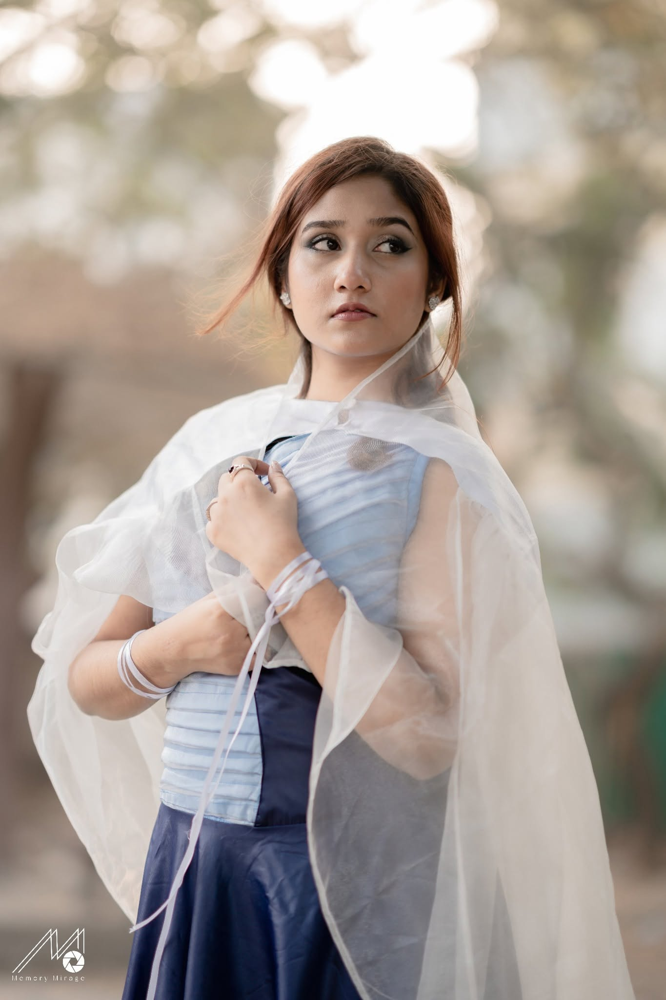

In focus01 / 05
Pleated blue dress
Motion
A flowing navy dress with pale-blue pleats and a sheer white wrap.
- The details
- Pleated bodice and sheer wrap
- Colour story
- Navy / pale blue / soft white

Photography · Memory Mirage
Thoughtful silhouettes. Expressive details.
An exploration of fashion, form, and individuality.
Designed with intention

Pleated blue dress
A flowing navy dress with pale-blue pleats and a sheer white wrap.
Photography · Memory Mirage
Explore five looks by Hridita Huq. Select a smaller model to bring it forward, or open the featured look for the full photo and details.
A little about me
I’m Hridita Huq, a fashion designer exploring the connection between clothing and individuality.
For me, a design begins with curiosity. A shape, a texture, a small detail—each can become the starting point for something personal.
I’m drawn to the balance of structure and softness, and to pieces that feel as expressive as the people who wear them.
Inside the atelier.
From a first thought to a final detail.An idea takes shape
Loose marks, considered proportions, and the first possibility of a silhouette.
Explore the studyGraphite / Paper / Possibility
Illustrative studies · AI imagery. Hridita’s own sketches, materials, and process photographs will take their place here.
Notes on form.
A closer look at the thingsHow a simple fold gives fabric its own rhythm, structure, and sense of movement.
Draft journal entries · Illustrative AI imagery. Ready for Hridita’s own words and photographs.